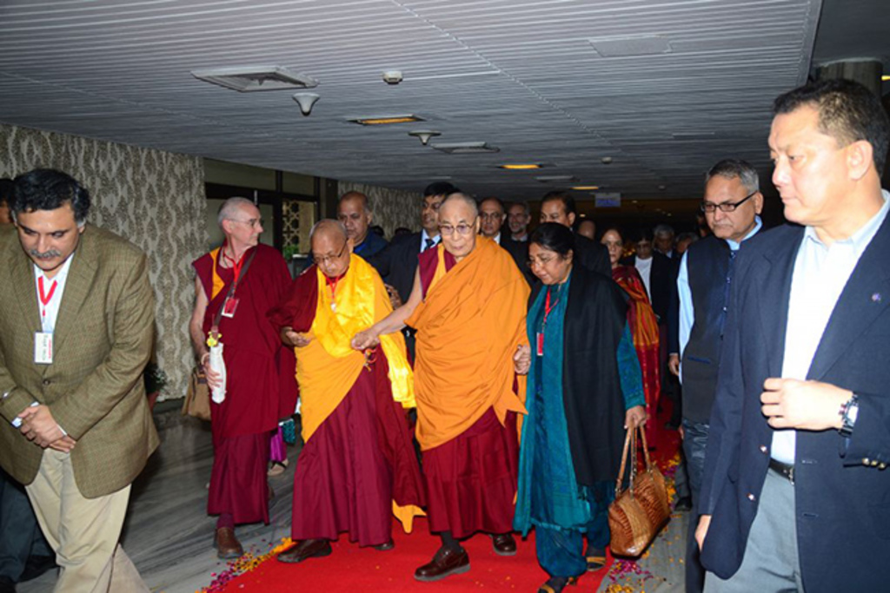
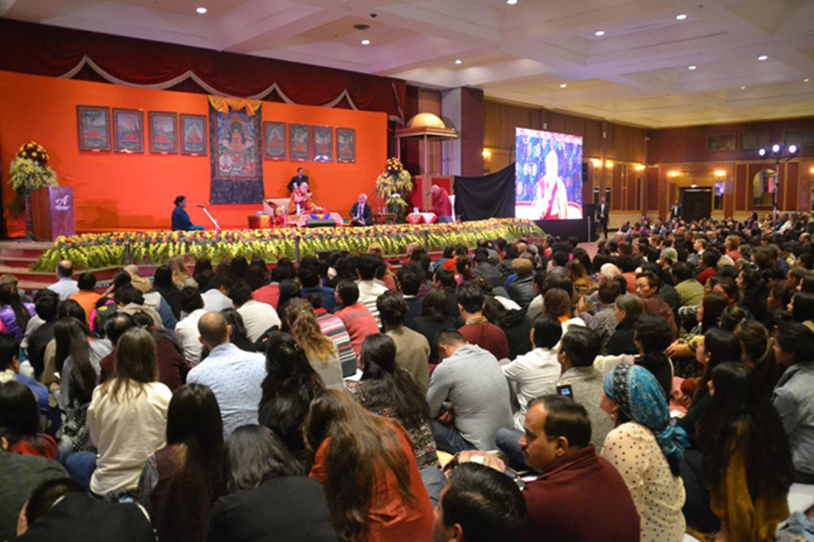
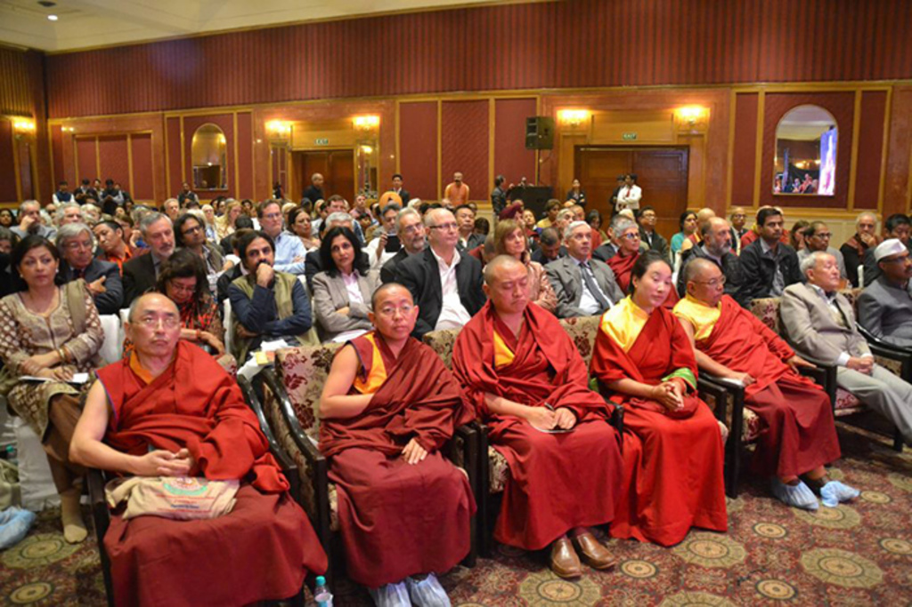

His Holiness the Dalai Lama giving a public talk at the 21st annual Dharma Celebration, New Delhi, India, December 2016.
On December 11, 2016, Tushita Mahayana Meditation Centre hosted a public talk with His Holiness the Dalai Lama during its 21st annual Dharma Celebration at the Hotel Ashok in New Delhi, India. Director Prof. Renuka Singh shares highlights from the event. His Holiness very graciously agreed to give a public lecture in English on the theme of “Compassion and Secular Ethics in the World Today.” FPMT founder Lama Yeshe and FPMT spiritual director Lama Zopa Rinpoche had initiated the Dharma Celebrations in Delhi, the first one held in 1981 at the same venue. His Holiness gave us two precious hours. We had over 1,500 attendees and were sorry that many people who arrived late or without an invitation card could not gain entry as the security was very stringent. Different groups of Indians, Tibetans and foreigners comprised our audience.
Many high lamas and Sangha, important diplomats and bureaucrats, businessmen, academics, professionals, and students enjoyed and benefited from the talk. Before the talk, Ven. Kabir Saxena, director of Maitreya Buddha Project Kushinagar, made a Powerpoint presentation on the project. In a private audience, His Holiness met with Lama Zopa Rinpoche and the project trustees, advising them to ensure the project becomes a vibrant center of Buddhist study and learning.
His Holiness the Dalai Lama, with Lama Zopa Rinpoche, FPMT CEO Ven. Roger Kunsang, and Prof. Renuka Singh, Dharma Celebration, New Delhi, India, December 2016.
The welcome speech was given by the director, Prof. Renuka Singh, before His Holiness released two books on Guru Padmasambhava and Acharya Nagarjuna published by Wisdom Tree. It was unfortunate, Renuka asserted, that the Indian government, because of political compulsions, was not taking advantage of His Holiness’s expertise in the formation and establishment of Nalanda University in Bihar today. She urged the authorities to give some thought to it. His Holiness highlighted the facts that mentally, physically, and emotionally we are all the same. His discussions with the scientists over the last thirty years, especially in the context of destructive and positive emotions, reveal the fundamental compassionate nature of human beings. We are also social animals, so considering others as “us” and “them” prompts division and conflict that needs to be rectified. After the suffering that marked the 20th century, His Holiness continued, we should make efforts not to repeat it. Money and military power won’t help. What is required of us is that we show affection to each other. Inter-religious harmony is His Holiness’s second commitment. He expressed regret that today traditions intended to be a source of tolerance and forgiveness have become grounds for conflict and killing. He also mentioned that just as Buddha taught differently according to his listeners’ interest, their capacity, and conditions, so a multitude of other religions have come about at different historical junctures.
More than 1,500 people attended His Holiness’s talk at the 21st annual Dharma Celebration, New Delhi, India, December 2016.
Even though His Holiness gave up his formal political role in 2011, as a Tibetan, he remains committed to the protection of the natural environment of Tibet and the preservation of the Tibetan language and culture. This culture is rooted in the Nalanda tradition of Buddhism that entails rigorous study and practice. He was heading towards South India to distribute the Geshema degrees to a group of nuns who had completed their Buddhist Studies—a significant achievement for the ordained nuns. His Holiness alluded to a reassessment of the contents of the Kangyur and Tengyur in terms of science, philosophy, and religion. His Holiness also spent half an hour answering several questions pertaining to “abundance,” different dimensions of reality, the way to make children more compassionate through education, and finally to having the desire of living an ordinary life. He recounted that once he was in retreat at the Potala Palace in the presence of the regent. In the evening, when the regent would fall asleep, His Holiness would hear the laughter and singing of children below the palace as they were returning home from grazing their animals. He momentarily wished to be like them. However, he later realized that his position as the Dalai Lama enabled him to benefit and serve Dharma and all sentient beings. At the end, Lama Zopa Rinpoche gave heartfelt thanks to His Holiness and everyone who helped to make this event a success and presented a Dharmachakra to His Holiness. It was indeed a beautiful and meaningful celebration of Dharma, followed by tea. Buddhism has crossed bridges from century to century, decade to decade and has succeeded in changing the weltanschauung of people globally. Finally, I thank all our sponsors, members of Tushita and our spiritual program coordinator Ven. Gyalten Samten for their contribution and effort that made this Dharma Celebration a great success.
Many high lamas and dignitaries attended His Holiness’s talk, including Khadro-la (Rangjung Neljorma Khadro Namsel Drönme, front, fourth from right),
Dharma
Celebration, New Delhi, India, December 2016.
The centre is open Monday-Friday from 4.30pm-8.30pm and Sundays from 11am-5pm. The Centre is closed on Saturdays.
All programmes take place at the Centre and are also streamed live on Zoom.